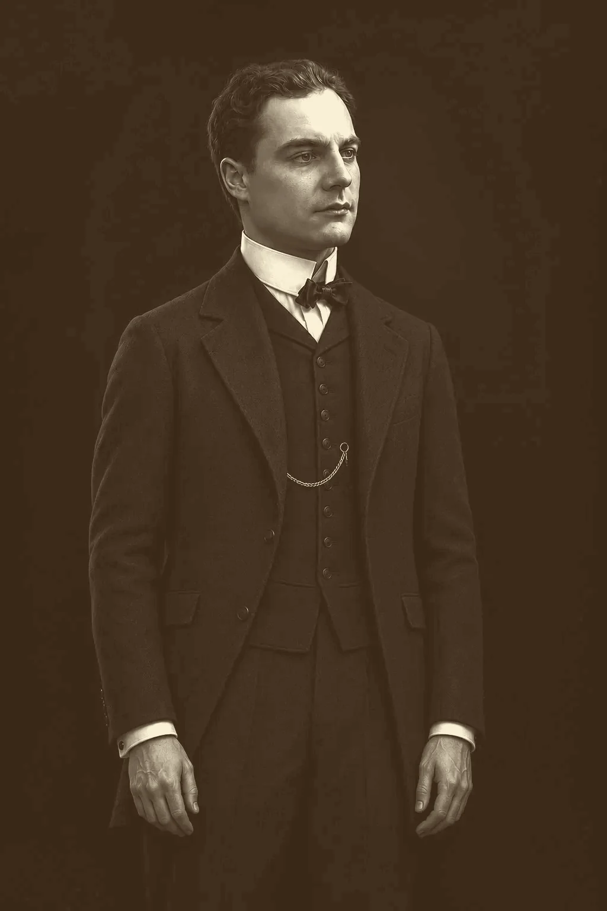

Тромбон · школа
Школа для раздвижного тромбона
Работа с ключами и исполнительской техникой. Упомянута в историческом обзоре консерватории. Ссылка ведёт к описанию, не к PDF.
Описание в источнике ↗
Биография и музыкальное наследие. Нотные источники, учебные работы и записи для исполнителей на медных духовых.
ИИ-реконструкция, не историческое фото. Портрет — художественное изображение, созданное с помощью ИИ по мотивам фотографии 1903 года; тромбон — рисунок-элемент оформления. Фон: Большой зал Московской консерватории (1940-е) и Большой театр (около 1905 года), Wikimedia Commons, общественное достояние.
Начальная подборка, а не полный каталог. Ссылки ведут в библиотеки и к описаниям произведений; чужие нотные файлы здесь не размещены.
Сложность пока не оценена по нотам. Предлагаемая шкала: базовая, средняя, высокая — по диапазону, ритму, выносливости и ключам. По одному названию оценка не назначается. Фильтр источника обозначает ресурс ссылки, а не проверенное издательство.
В подборке — 10 записей
Работа с ключами и исполнительской техникой. Упомянута в историческом обзоре консерватории. Ссылка ведёт к описанию, не к PDF.
Описание в источнике ↗Учебная работа из перечня наследия Блажевича на сайте Московской консерватории. Издания и их даты требуют отдельного сопоставления.
Описание в источнике ↗Произведения для двух тромбонов, включённые в обзор педагогического наследия. Нотный файл пока не добавлен.
Описание в источнике ↗26 мелодических упражнений в различных ритмах и ключах — по описанию Московской консерватории.
Описание в источнике ↗Карточка нотного материала в библиотеке classON. Условия доступа и использования определяет библиотека.
Ноты в библиотеке ↗Этюды, страницы 29–47. Нумерация страниц приведена по карточке classON.
Ноты в библиотеке ↗Этюды, страницы 48–66. Продолжение подборки библиотеки classON.
Ноты в библиотеке ↗Самая известная в США работа Блажевича. Американские издания: Райхман (Leeds, 1948), Острандер (IMC, 1957), Хансбергер (MCA, 1965). Современный уртекст East-West сделан по русскому изданию 1939 года.
История изданий ↗Тринадцать концертов, написанных для студентов консерватории. Большинство создано в 1920-х годах, многие при жизни автора не изданы. Первые четыре записал Калеб Ламберт.
Проект записей ↗Американская редакция Роберта Кинга, Alphonse Leduc, два тома. Источники связывают эти этюды со школой для тромбона в ключах.
Каталог IMSLP ↗Ничего не найдено. Попробуйте другое название или выберите все инструменты.
Авторский проект, связанный с исследованием в Университете Айовы. Ламберт сообщает о записи первых четырёх тромбоновых концертов и ранее не публиковавшейся миниатюры. На странице доступны записи и ссылка на исследование.
Переход на внешний сайт. Автоматического воспроизведения и копий аудиозаписей здесь нет.
Тромбонист Большого театра, профессор Московской консерватории и автор школ, по которым до сих пор учатся тромбонисты и тубисты в России и США. Сирота со смоленского хутора, он с двенадцати лет играл в военном оркестре, учился у Христофора Борка, а когда учить оказалось не по чему, сам написал школы, этюды и тринадцать концертов.